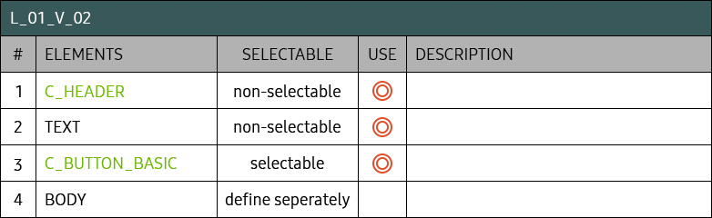

- Definition
-
Use Layout 01 Variation 02 to involve multiple tasks.
- Specs
-
- Properties
-
- Note
-
- 1.
- 2.
- 3. Buttons in this area should be composed of only a text. The button to return to the previous status (Close, Cancel, etc.) should be provided.
- 4. Body is freely configurable as needed and the focus can reach this area. Here are the list of available components for Body.
C_List, C_Grid, C_InfoTile, C_Scrollbar [TBD]
- Initial State
-
- - If Body has the component that can have the focus, the focus is initially on the first item.
- - Or else, the focus is on the first available button.
- Layout Element Table
-

- Examples
-
-